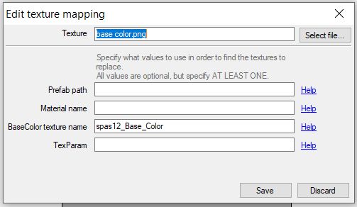
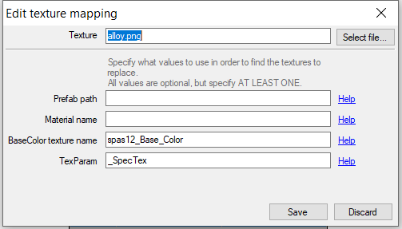
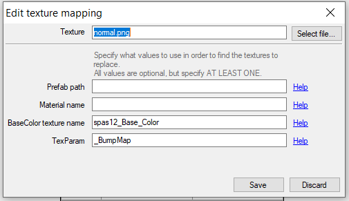

Now, this should be the last step of the process!
Close Substance Painter
Open Skinpacker.exe!
A very simple window will pop up, but you won't be able to do anything just yet.
Click on "Select Project Folder"
Locate that folder which you exported your Substance Painter stuff in.
By choosing that folder, a popup saying "This folder does not have a manifest file. Create a new one?"
Select Yes.
The main window will now open up with details for you to fill.
GUID - The techy name that Sideloader will use to load up your files. Has to be lowercase, with '.'s or '_'s instead of spaces.
Name - Self explanatory, the name of your skin, if you gave it one
Version - Also self explanatory, set as "1.0.0". If you set as "1", it won't go any further.
Description - Give it a flavor text or just say "Made by you". Details here are completely optional.
The next part has confused people, but I promise it isn't as complicated as you think.
Click on "Add"
Open this on another tab
This is Ghorsington's handy prefab spreadsheet with details on every gun in H3VR, super useful for hotmodding in general! Bookmark it!
CTRL + F, and type in a part of the name of your item
Once you located parts of it, look for the main part. Albedo, Diffuse, Base Color, or just the name of the item itself.
Across from the Prefab and Material names, located your item's "_Main Tex"
Copy those details
Back to the Skinpacker
Clicking on "Add" will open a new window for you.

What you need to do first is choose your "base color" export
Hit "Select File"
And choose that "base color.png"
Next, the details to fill out down below
My example, using the Spas, I have the BaseColor texture name "spas12_Base_Color"
For you, it will be whatever that _MainTex entry that you copied from the spreadsheet is.
Paste it in the same location, and "Save".
Now, hit Add again.
This time, for the "alloy.png" file.
Hit "Select File"
Choose your "alloy.png" file.

And then make the entry look like this example.
Yes, it looks the same as the picture above. The simplicity of pasting the BaseColor Texture Name makes this process both easy and slightly confusing.
_SpecTex for the TexParam entry specifies it is the Alloy entry, and is the key difference between the first entry you made.\
Click on "Save" when you get a similar match comparing it to the picture above.
Now, can you guess what to do for the "normal.png" file?

Yup. Same thing, except you select the "normal.png" file up above, and the TexParam is now _BumpMap.
This is the last entry needed.
"Save" when you get this part done.
Click on "Save Manifest"
Then, last part, "Pack into .h3mod"!
For my example, I'd call it "spas12_bs", so nameofitem_name is recommended for your skin, but you can call your skin whatever.
The hotmod will save where the pngs and manifest is located. This hotmod will be bonafide ready for Sideloader to use.
Wait... What's Prefab Path and Material Name used for, then?
Prefab Path and Material Names are extra details to specify when "BaseColor Tex Name" is waaay too ambiguous.
Example, want to know what the Desert Eagle 44's _MainTex is called?
"Albedo"
Which is also the same as the C1851 Conversion
And they will share those same textures if no further details are added
So the prefab path would be
h3vr_data\streamingassets\assets_resources_objectids_weaponry_pistols\deserteagle44
Or you could use the material name entry
mtl_Deagle_Matte
Either would be enough to prevent the C1851 from being affected by your hotmod.
Do keep a cautious eye for _MainTex names that seem a bit too broad!
CONGRATS! You know the basics of making skins! You are now ready to make all sorts of skins!
But! Stick around! There's more to learn about what you can do for your skins in the Skin Making Advanced course!
Be sure to check out the Extras too!